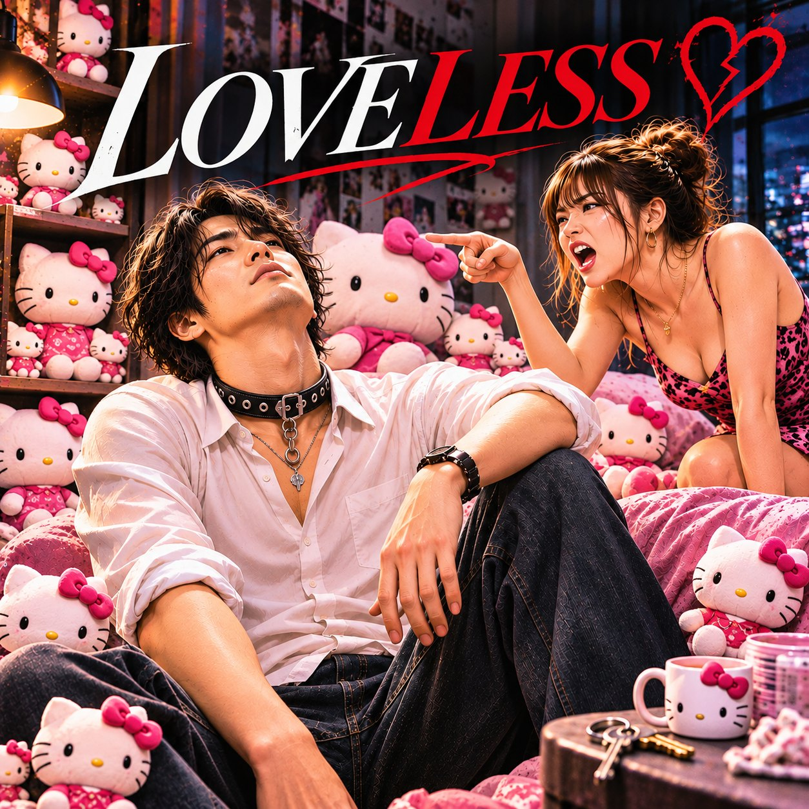

LOVELESS

05
LOVELESS
PIP POPPER
AI ImpressionAIの感想
束縛の強い恋人との関係に息苦しさを感じながら、別れを切り出せずにいる男の本音をまくしたてる一曲。首輪とリード、部屋を埋め尽くすキャラクターグッズといった具体的なモチーフで、不自由な日々がコミカルに描かれる。「明日こそ別れる」と言いながら結局流されてしまう情けなさまで隠さず描き、英語交じりのサビがその叫びを際立たせている。
Lyrics
譲らねぇんだなどんなときももう限界なんだおまえのご希望聞いちゃいらんねぇ、もういらねぇ オマエといてもつまんねぇよコレが見えるか？俺に繋がった 首輪とリードとチェーンの輪操り人形 マリオネットみたいに自由奪われた関係リセット昔は君がOnly Oneだったけどこの最後のStoryは片想いさ 思った通りさ押し付ける気持ちが重いのさＡとＢとＣ飛んでＥベッドインの後は飛んでいい？当然ＥはENDのＥもうオマエ邪魔なだけの存在別にいいだぜ オマエのほうから姿を消してみてはどうかな？迷っちまった出口が見えねぇ迷路冥土の土産にこの音色とラップは俺のHANDMADE面と向かって言うのが面倒もう時間がねぇ！なんとかしなくちゃ。 純一みたく不倫オブCulture
Please don’t catch.Oh My BABY いつもオマエのせいで縛られI don’t have a Freedom.満たされねぇんだMy Private消えてくれLADY取り戻せPrecious time
また始まっちまった「私のこと好き？」 Oh! コレは難題Questionまだ気持ち隠し通す気？って自問自答。 口に出す言葉と本音遠すぎる！凄過ぎるスキル。磨きあげた嘘つきスキル。 Steel your heartしたままそのまま聞いたぜあんたのワガママ最初のころはマジに惚れた。今じゃ最初のころ気持ち忘れた。喧嘩の対処の仕方覚えた。今じゃ内緒のこともかなり増えた。俺の部屋にはキティが５０％。ゴミとキティが５０％５０％すぐにバレるじゃねえかギャル連れ込めねぇじゃねえかＹｏ!彼女がやってくるFRIDAY本音は自由になりてぇPRIVATEつまんねぇ乳首つまんでこんな週末僕はもう辛いです。オマエのどこスキになればいい？今日こそはオマエとはBYEBYE！My Answer ファイナルアンサーオヤジとお見合いくらいがお似合いさ。
Ｉ don’ｔ love. しょうがないぜうるせぇBe quiet縛られI don’t have a Freedom.見えない鎖で繋いでこんな日々つらいぜ明日こそSAY GOOD BYE
My Privete is not free.It’s too late.時間を俺にくれBy this time I lost my love.君に何言われてももう無理なんだ君とはBad Feeling
修羅場覚悟。俺は書くぞ。 何を隠そう！アレもへたくそ…ん？ 持って帰れ！穴空いたJeans。 それと早く返せその合い鍵。…………と言いたいが、掴めぬタイミング、 全裸の君にダイビング。Yo,やっぱオマエが一番。とか言っちゃってすぐに入っちまう何故か尽きぬスタミナ、身体はToughness。つまり気持ちはLoveless.終ったら口開けて即寝。起こして別れ話めんどくさくね？呪いの言葉頭よぎる。過ぎる言葉が脳の奥に染みるもう許せん！次は余裕で言うぜYouSAY? SAYWHAT? 明日こそは
Please don’t catch.Oh My BABY いつもオマエのせいで縛られI don’t have a Freedom.満たされねぇんだMy Private消えてくれLADY取り戻せPrecious timeＩ don’ｔ love. しょうがないぜうるせぇBe quiet縛られI don’t have a Freedom.見えない鎖で繋いでこんな日々つらいぜ明日こそSAY GOOD BYE